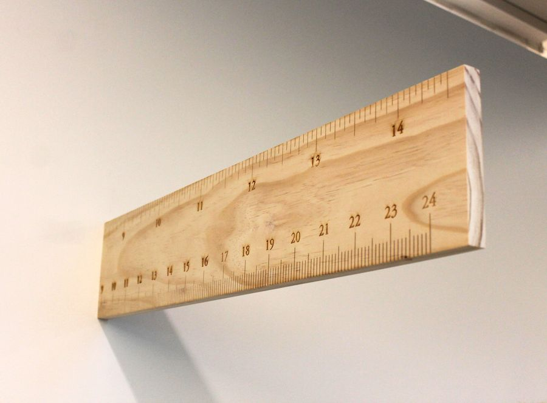
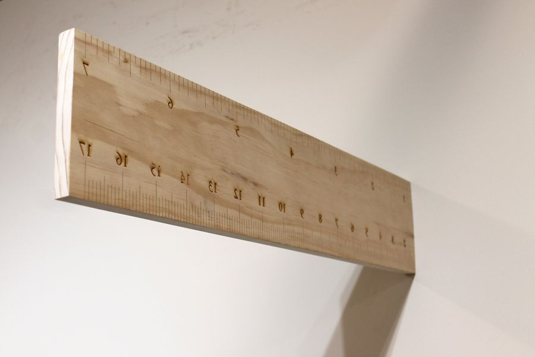
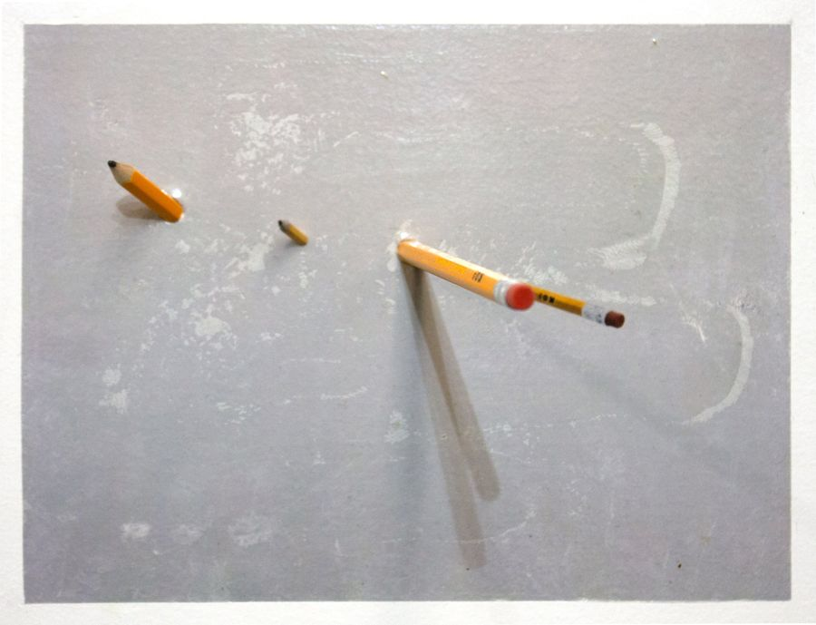
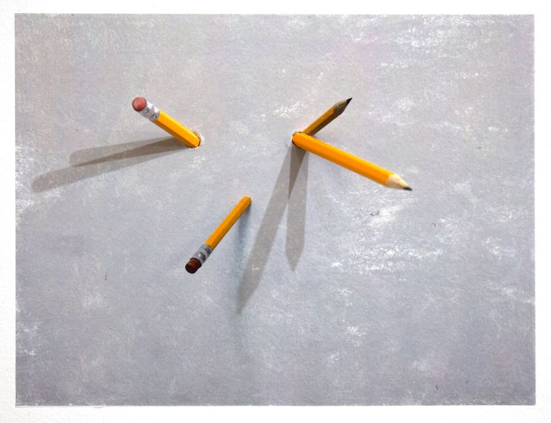
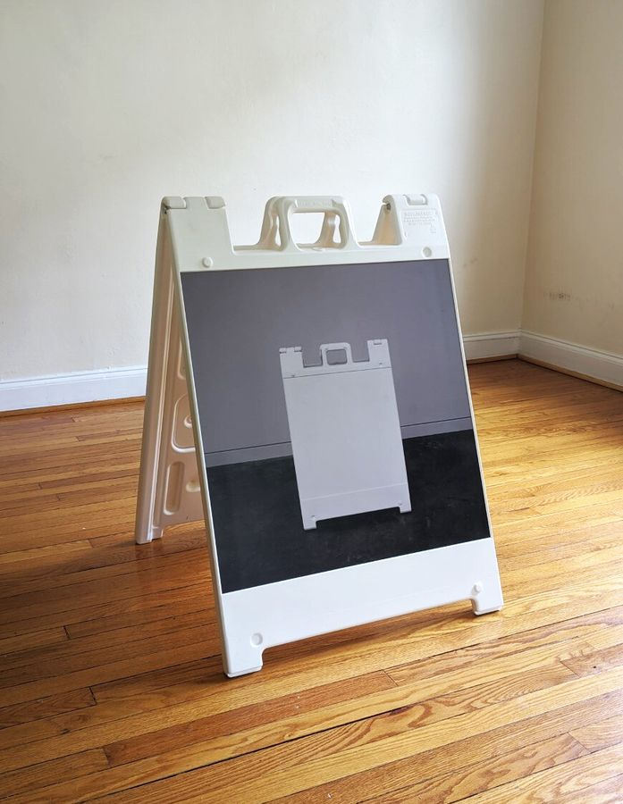
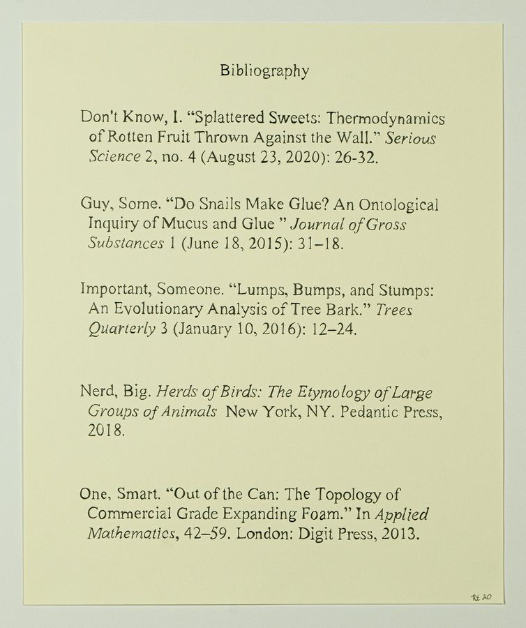
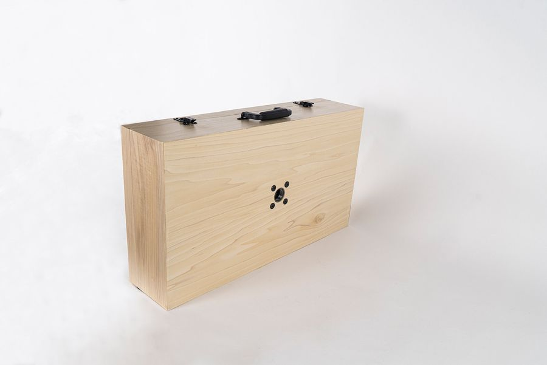
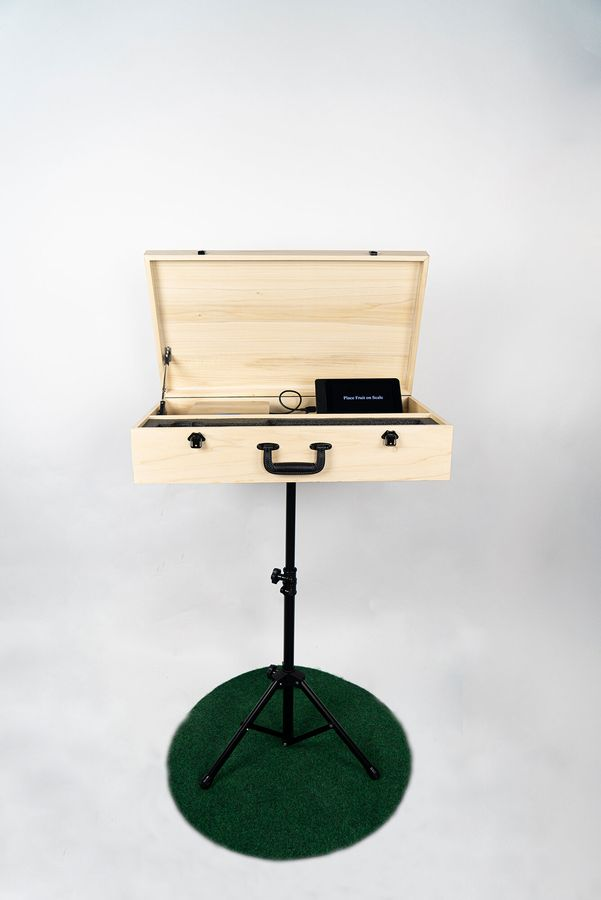
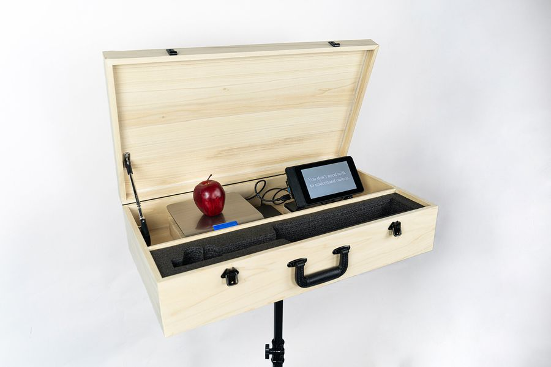

Statement
In my series Instruments of Logic, I bring a sense of irrationality to rational objects, prompting questions about our arbitrary units of measure and methods of communicating them. I aim to reveal how these systems, while powerful, are inherently unstable.



















